Procedure - B
SI B13 01 07 - Procedure BVehicles equipped with the M56 (SULEV) engine
1. Run the vehicle to operating temperature.
2. Remove the fuel pump fuse; refer to the vehicle electrical schematic. Allow vehicle to run and stall to bleed residual fuel pressure.
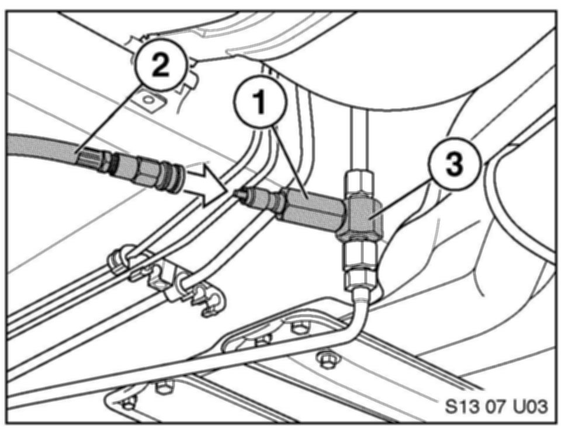
3. Lift the vehicle to access the fuel system connection adjacent to the fuel tank. Open the connection and install Special Tool P/N 81 11 0 394 963 (3). Refer to SI B16 05 04 for additional information. Install the EFI Quick Disconnect Fitting (1) to the adapter. Connect the application cylinder quick connect to the fuel rail adapter (2).
4. Reinstall the fuel pump fuse and start the vehicle to allow the fuel system to re-pressurize.
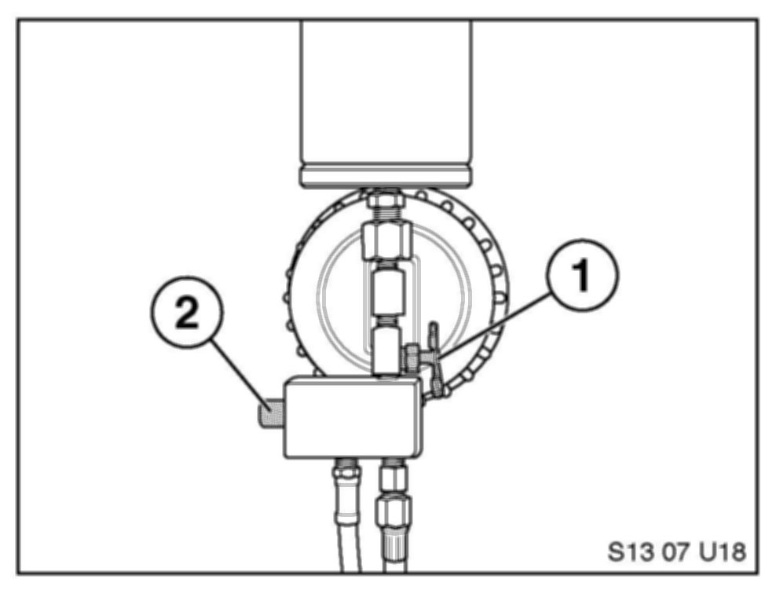
5. Close the shutoff valve on the applicator (1). Press the pressure relief button (2) on the applicator to bleed 1 liter of fuel into the plastic bottle supplied with the kit. Install the cap on the bottle.
Note:
It may be necessary to start and run the vehicle during this step.
6. Remove the fuel pump fuse again; refer to the vehicle electrical schematic. Allow the vehicle to run and stall to bleed residual pressure.
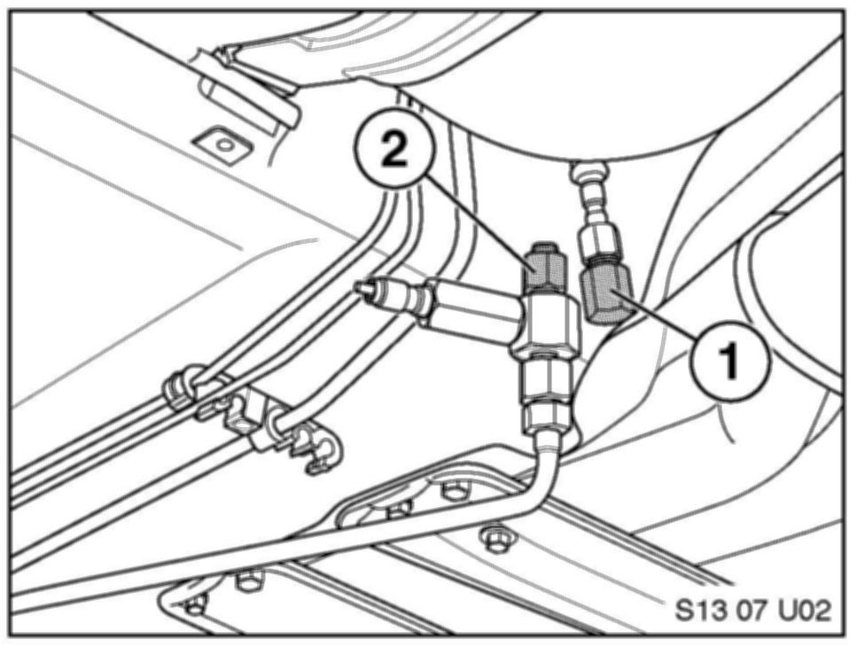
7. Unscrew the upper portion of the pressure adapter. Install the high pressure threaded male plug to seal the fuel system (1). Install the high pressure threaded female cap on the adapter (2).
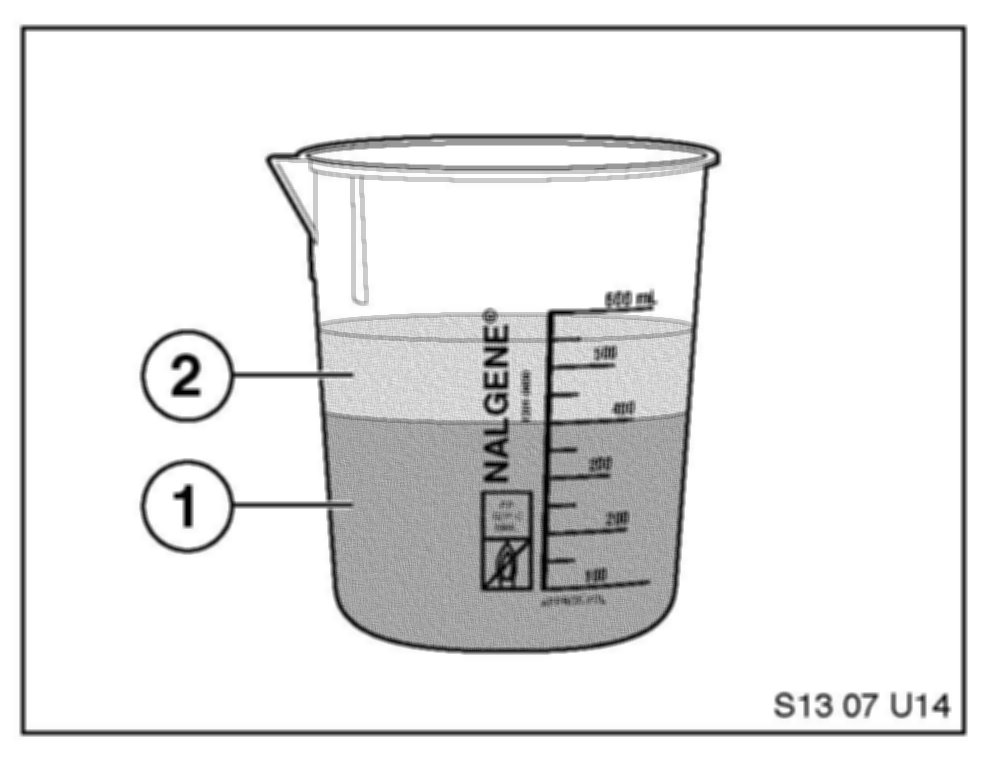
8. Pour 400 ml of fuel (1) and 150 ml of cleaner concentrate (2) into the beaker supplied in the kit.
9. Unscrew the top portion of the applicator and pour the mixture inside the tool. Reinstall the lid hand-tight and hang the cylinder from the closest lift arm securely using the chain/hook.
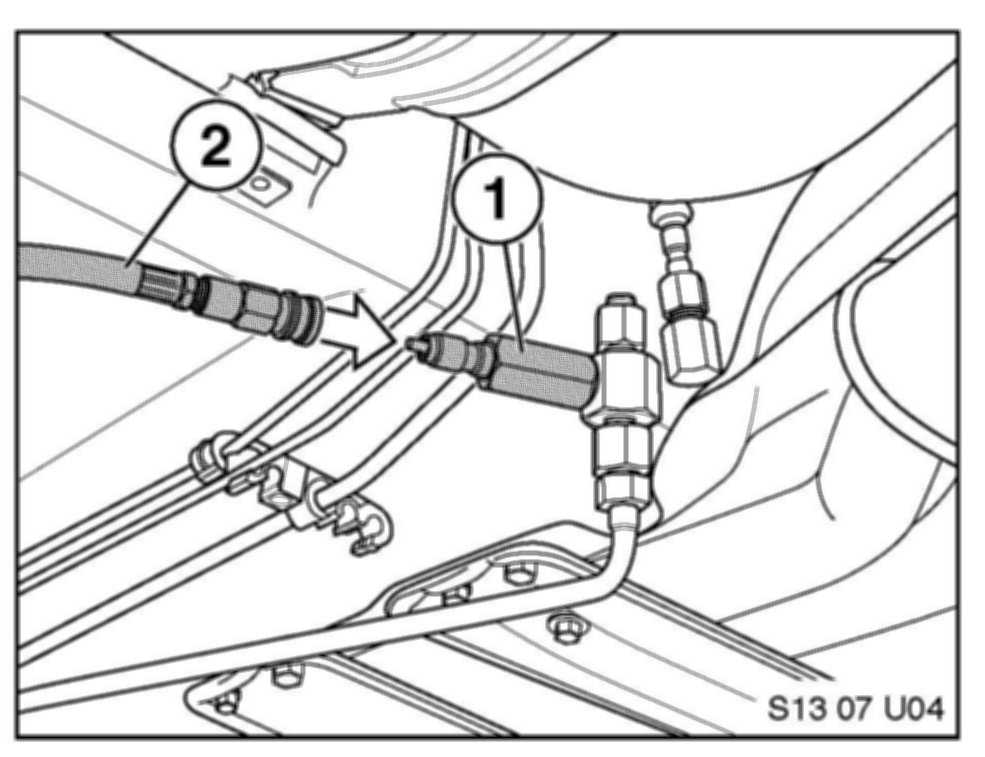
10. Connect the application cylinder quick connect (2) to the EFI Quick Disconnect Fitting (1).
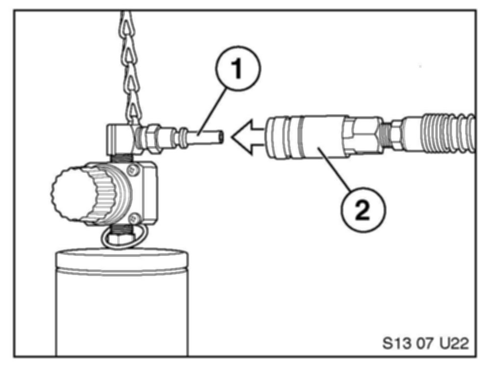
11. Connect the shop air supply (2) to the application cylinder (1).
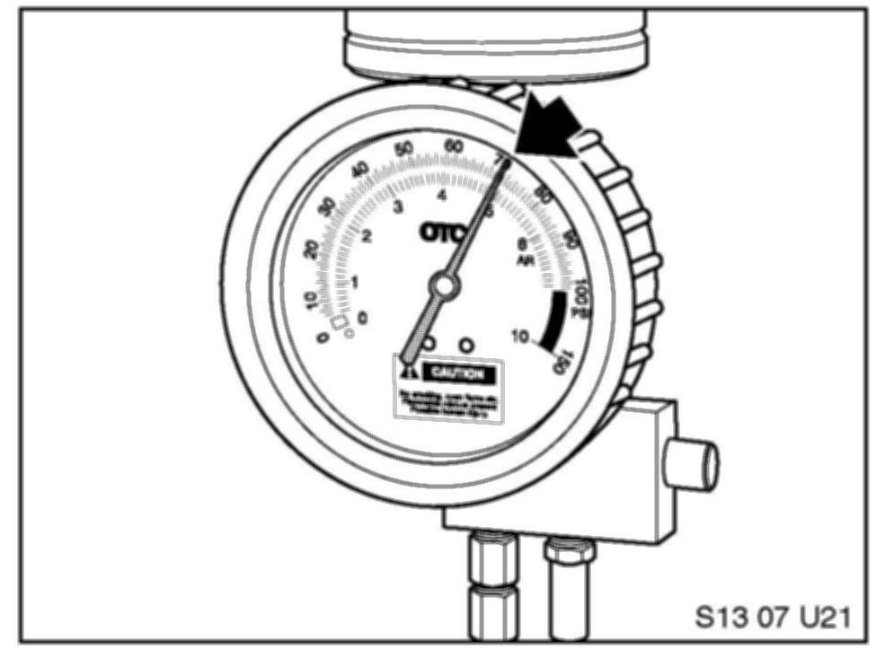
12. Adjust the pressure regulator to 70 PSI and open the shutoff valve at the bottom.
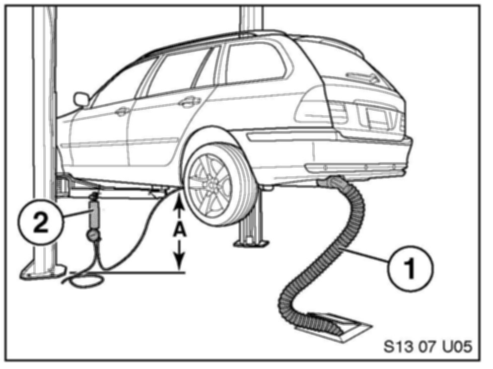
13. Lower the vehicle on the lift to a safe height (A) whereby the applicator or hose (2) is not damaged. Install the Exhaust Removal System (1).
14. Start the vehicle; the vehicle should idle smoothly. The cleaning procedure should last approximately 12-14 minutes. If the vehicle begins to run roughly or misfire then turn the vehicle off. The applicator is nearing empty or is empty: remove the applicator quick connect from the EFI Quick Disconnect Fitting.
15. IMPORTANT! Remove the shop air supply hose from the applicator before removing the lid or releasing the pressure from the applicator.
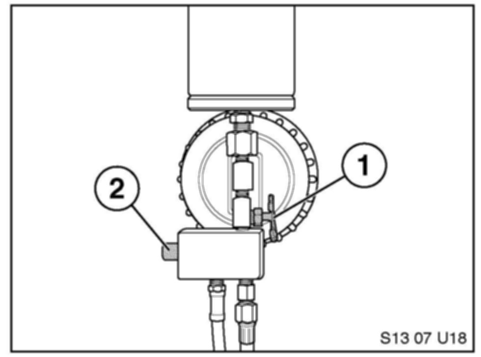
16. Release the pressure from the applicator cylinder with the pressure release button (2). Close the shutoff valve (1).
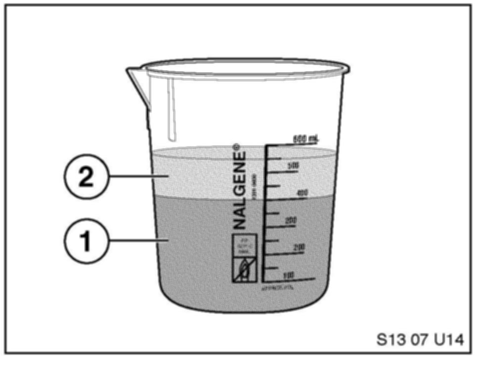
17. Pour 400 ml of fuel (1) and 150 ml of cleaner concentrate (2) into the beaker supplied in the kit again to start the second application.
18. Unscrew the top portion of the applicator and pour the mixture inside the tool. Reinstall the lid hand-tight and hang the cylinder from the closest lift arm securely using the chain/hook.
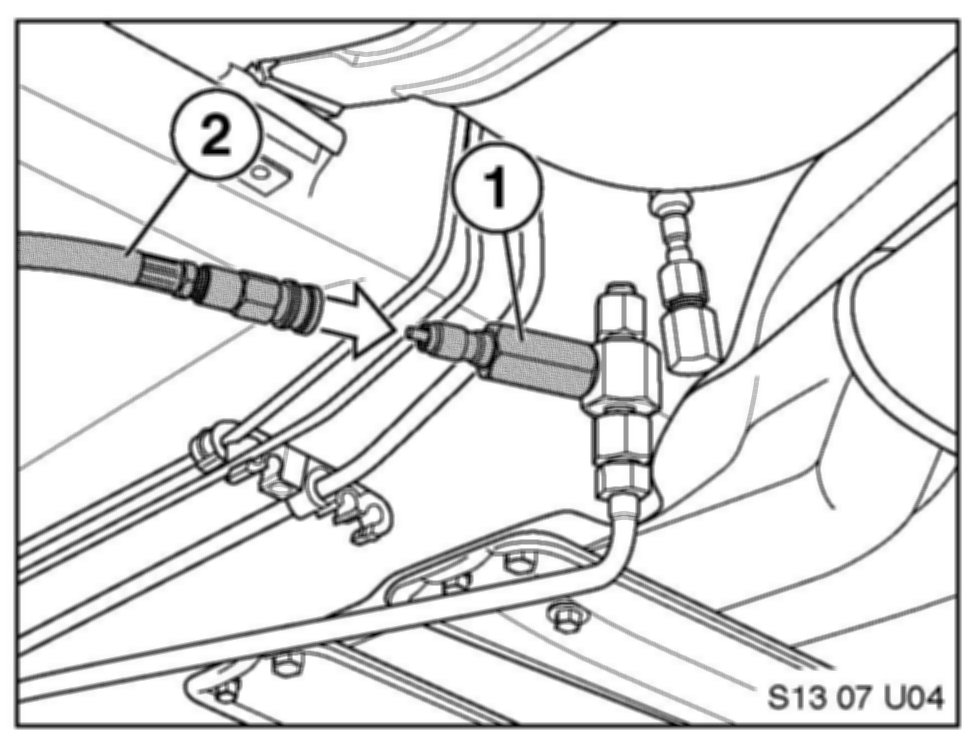
19. Connect the application cylinder quick connect (2) to the adapter to the EFI Quick Disconnect Fitting (1).

20. Connect the shop air supply (2) to the application cylinder (1).
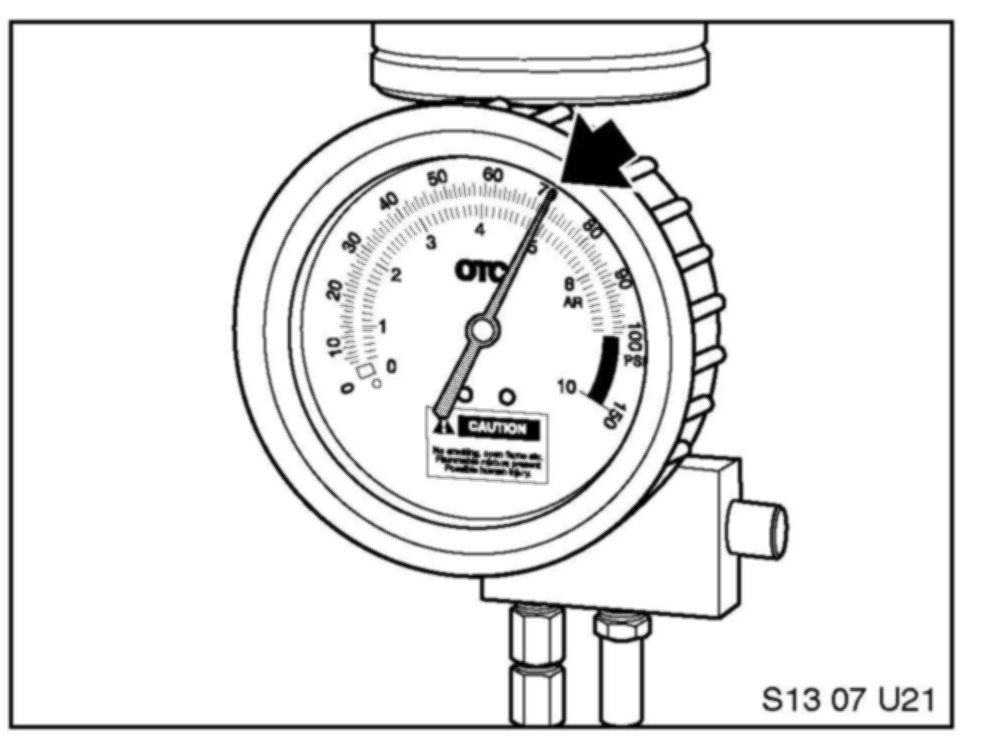
21. Adjust the pressure regulator to 70 PSI if needed and open the shutoff valve at the bottom.
22. Start the vehicle; the vehicle should idle smoothly. The cleaning procedure should last approximately 12-14 minutes. If the vehicle begins to run roughly or misfire then turn the vehicle off. The applicator is nearing empty or is empty: remove the applicator quick connect from the EFI Quick Disconnect Fitting.
23. IMPORTANT! Remove the shop air supply hose from the applicator before removing the lid or releasing pressure from the applicator.
24. Release the pressure from the applicator cylinder with the pressure release button (2). Close the shutoff valve (1).
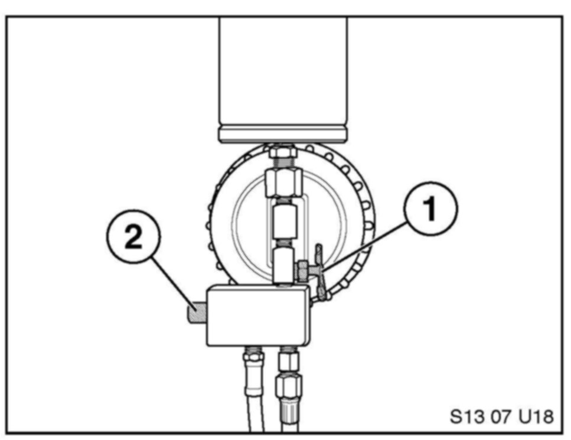
25. Remove the application tools and reassemble the vehicle.
26. Refer to the final procedure before releasing the vehicle.